The AI-First Service Design Operating System
Confidentiality & provenance note
This article is a framework article: it does not describe one client, it describes the operating system we now run every service design engagement on. The three engagements referenced throughout — a regional bank, a municipal council, and an industrial field-service provider — are fictional composites built from recurring patterns across multiple real projects. All names, figures, datasets, and quotes are illustrative and anonymized; nothing here is traceable to any real organization. What is real is the method: every phase below was executed AI-first, with Claude Code, OpenCode, Codex, and GitHub as the primary working tools and a human service designer holding framing, ethics, and final judgment.
Executive summary
Service design has a throughput problem. The canonical loop — research, ideation, prototyping, implementation (See: 01-this-is-service-design-doing/03-the-service-design-process.md) — is sound, but its unit economics are poor: weeks of transcript coding, synthesis walls rebuilt by hand, blueprints that rot the moment the workshop ends, and traceability from insight to delivered feature that exists only in the designer's memory. This article defines the AI-First Service Design Operating System (SD OS): a repeatable assembly of (a) a six-role agent team mapped to service design subdisciplines, (b) SOPs-as-code — every SD method encoded as a step list, output schema, acceptance criteria, and review gate — (c) a four-tool execution stack (Claude Code orchestration, OpenCode data pipelines, Codex deep research and adversarial review, GitHub issue-driven delivery with PR gates and validating Actions), and (d) a designer-in-the-loop governance model that keeps framing, client trust, ethics, and final judgment human. On a controlled fictional benchmark engagement, the SD OS delivered an equivalent scope in 10 weeks against a 16-week traditional plan, at 388 designer-hours against an estimated 640, with 100% insight-to-blueprint traceability.
What you will learn:
- How to structure an agent team for service design work — which roles exist, what each owns, and how they hand artifacts to each other without losing evidence.
- How to encode SD methods as SOPs-as-code so agents execute them reliably and human gates catch what agents get wrong.
- Where AI genuinely creates value in the SD loop, where it fails, and the governance model that keeps the failures cheap.
The brief
The problem space
The "client" for this framework is any organization commissioning service design work — and the practitioner running it. Three composite profiles anchor the numbers in this article:
- Calder Community Bank — a fictional regional bank in the Benelux, 410,000 customers, 38 branches, mid-maturity digital estate, struggling with digital onboarding abandonment.
- Fernwood Council — a fictional municipality of 180,000 residents, running a housing-repair claim process drowning in status-chasing calls (classic failure demand; See: 01-this-is-service-design-doing/07-implementation-and-piloting.md).
- Forge Industrial — a fictional B2B industrial services firm, 620 field technicians across four countries, quoting cycles measured in days rather than hours.
Across all three, the same structural pain appeared, and it is the pain the SD OS is designed to remove:
- Research throughput. Twenty-four interviews produce roughly 25 hours of audio and 400+ pages of transcript. A solo designer needs three to four weeks to code and synthesize that corpus properly — so most engagements silently cut the corpus to eight interviews instead. Generative research depth (See: 03-service-design-from-insight-to-implementation/04-from-research-to-insight.md) is the first casualty of budget pressure.
- Synthesis decay. Affinity walls are rebuilt by hand into decks; the chain from verbatim quote → cluster → insight → concept → blueprint element → shipped feature breaks within two weeks. Kumar's end-to-end traceability audit (See: 17-101-design-methods/01-innovation-as-a-process.md) is almost never executable in practice because the chain of custody lives in sticky-note photographs.
- Iteration collapse. The "fake iteration" trap (See: 01-this-is-service-design-doing/03-the-service-design-process.md): one research round, one workshop, then a linear delivery plan. Not because practitioners believe in it, but because a second loop costs another four weeks nobody budgeted.
- Institutional amnesia. Each engagement restarts from blank templates. Method quality depends on who is on the team that month — the opposite of the repeatable capability that Kimbell argues for (See: 06-the-service-innovation-handbook/08-organizing-for-service-innovation.md).
Success criteria for the framework
We set measurable criteria before building the SD OS, benchmarked against a traditional-baseline estimate for the same scope:
- Reduce designer-hours per full-loop engagement by at least 30% without reducing research corpus size.
- Compress calendar time by at least 25% while adding one extra iteration loop.
- Achieve 100% traceability: every blueprint element links to a scored concept, an insight card, and at least one evidence quote.
- Every client-facing artifact passes a documented review gate before a human presents it.
- Zero privacy incidents: no raw participant data leaves the client's approved boundary unanonymized.
Constraints
- Budget ceiling: composite mid-market budget, €55,000–€90,000 per engagement, ruling out large research teams.
- Regulation: bank and council work touches personal data; GDPR-grade handling is mandatory, which constrains what may be pasted into a general-purpose chat tool versus run in a controlled pipeline.
- Trust: clients sign off on insights that change their operations; a hallucinated statistic in a decision memo would end the mandate. Accuracy is existential, not nice-to-have.
- Tooling reality: the stack must run on a single practitioner's laptop plus standard API access — no bespoke platform build.
Why service design — and why an operating system
The engagements above are service problems, not product problems: onboarding abandonment was caused by anxiety across a 10-day processing window, not by UI friction alone; the council's call volume was failure demand created by absent status visibility, not by staff performance. These are exactly the conditions where the SD loop outperforms requirements-led delivery (See: 01-this-is-service-design-doing/03-the-service-design-process.md). But the loop's cost structure made it rationed. The hypothesis behind the SD OS: if each method in the loop is encoded precisely enough for an agent to execute — the way Kumar's method cards specify What / When / How / Output (See: 17-101-design-methods/01-innovation-as-a-process.md) — then a single designer can run the full loop at full corpus depth, at higher iteration cadence, for less money. The rest of this article is that encoding.
Approach: the AI-first service design process
3.1 Process frame: 4D mapped to the TISDD loop and Kumar's 7 modes
We run the standard four phases — Discover, Define, Develop, Deliver — as the client-facing spine, with two mappings underneath: the TISDD activities (Research, Ideation, Prototyping, Implementation) repeat inside each phase rather than occurring once, and Kumar's seven modes give each phase its cognitive job (See: 17-101-design-methods/01-innovation-as-a-process.md; See: 01-this-is-service-design-doing/03-the-service-design-process.md).
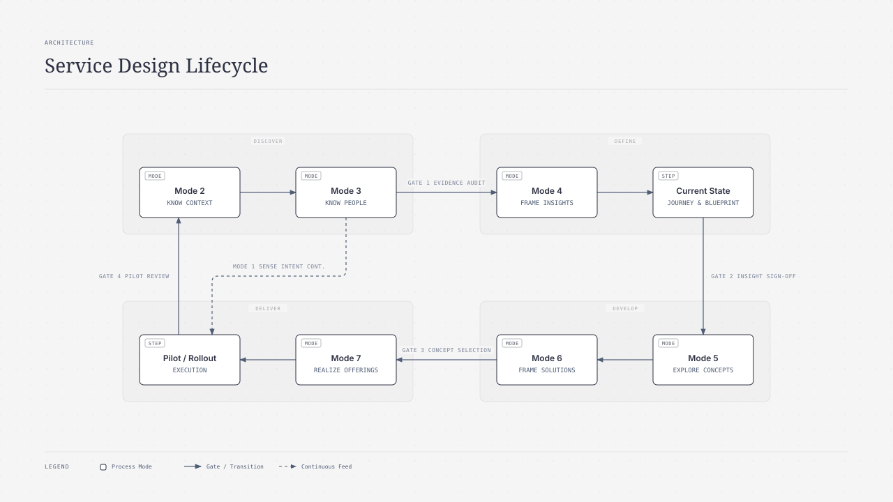
Mode 1 (Sense Intent) is deliberately drawn as continuous: the strategic frame is held as a provisional end-in-view and revised whenever the situation talks back (See: 11-design-unbound/02-design-as-a-way-of-acting.md). The return edge from Deliver to Discover is the closed measurement loop — live pilot metrics feed the next research round (See: 01-this-is-service-design-doing/07-implementation-and-piloting.md).
3.2 The SD OS architecture
The operating system has four layers. The human designer sits in the governance layer, not the production layer.
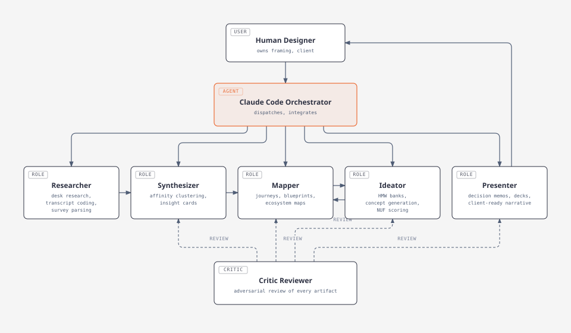
The evidence store is a plain GitHub repository. That choice is the quiet foundation of everything else: because every artifact is a committed, versioned file, traceability is a git log query rather than a memory exercise, and every gate can be enforced by CI rather than by diligence.
3.3 Agent-team topology
Six agent roles cover the SD subdisciplines. They are not six chatbots; they are six system-prompt-plus-tool-configurations dispatched by the orchestrator, each with a narrow contract.

Mapping to subdisciplines: the Researcher executes the ethnographic and secondary methods (See: 01-this-is-service-design-doing/04-research-methods.md); the Synthesizer owns the data → information → insight ladder (See: 03-service-design-from-insight-to-implementation/04-from-research-to-insight.md); the Mapper owns zoom-level coherence from ecosystem to touchpoint (See: 01-this-is-service-design-doing/03-the-service-design-process.md); the Ideator runs divergence under deferred judgment and convergence under multi-criteria filters (See: 01-this-is-service-design-doing/05-ideation-methods.md); the Presenter produces the 24-hour decision memos that keep momentum (See: 01-this-is-service-design-doing/08-facilitating-workshops.md). The Critic is the only role with veto power, and it reviews frames before executions, per the studio-crit protocol (See: 11-design-unbound/02-design-as-a-way-of-acting.md).
3.4 Agent interaction pattern
Agents never talk directly to each other in free-form chat. Every handoff is a file with a schema, committed to the repo, and every consequential handoff routes through the Critic.
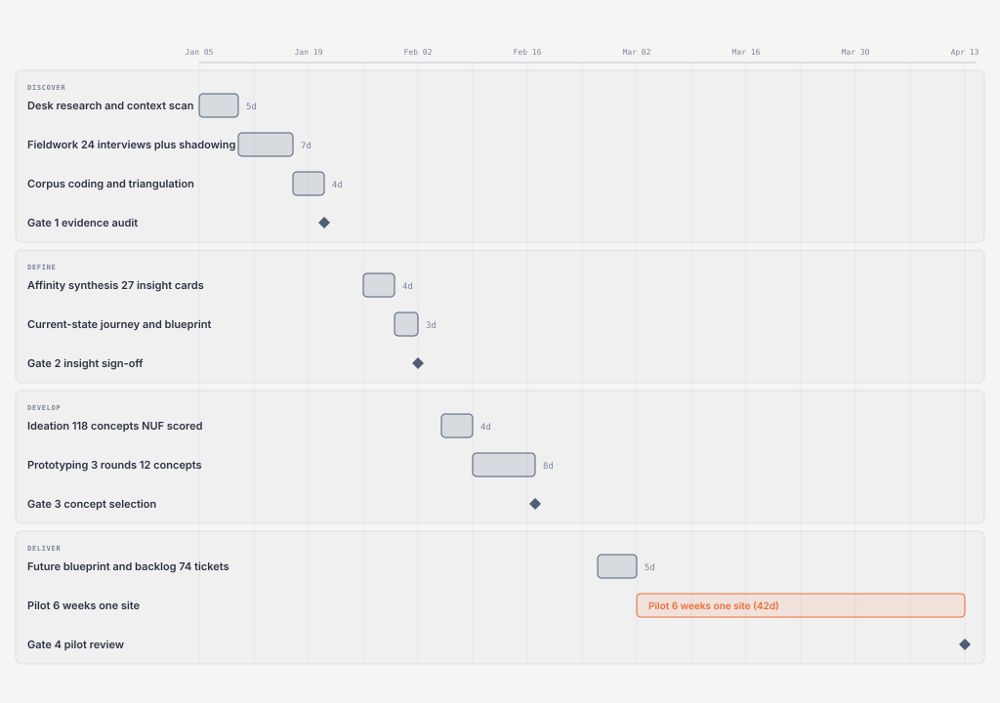
3.5 Project plan — reference benchmark engagement
The benchmark engagement ("Atlas") is a fictional composite full-loop redesign of a service-request journey for a mid-market client, run January to April 2026, used to calibrate every number in this article.
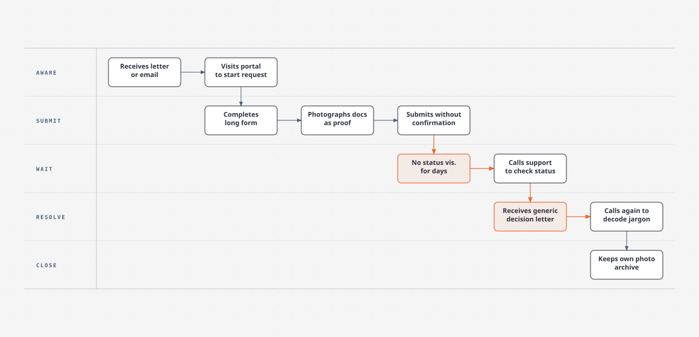
Total: 14 weeks end-to-end — roughly 8 working weeks of phase work (Discover through future blueprint) plus the 6-week pilot.
3.6 Phase → method → tool mapping
| Phase | SD method (book) | AI tool(s) | Artifact produced | Client involvement |
|---|---|---|---|---|
| Discover | Contextual inquiry, shadowing, triangulation (01/04) | OpenCode pipelines; Codex deep research | Coded corpus, context scan | Staff join fieldwork in person |
| Define | Affinity synthesis, insight cards (03/04) | Claude Code Synthesizer + Critic | 27 insight cards, current-state maps | Gate 2 sign-off workshop |
| Develop | HMW, brainwriting analogue, NUF, Wizard of Oz (01/05, 01/06) | Claude Code Ideator; OpenCode mock generation | Concept catalog, prototype plans | Co-design workshop, prototype playback |
| Deliver | Blueprint-to-backlog, pilot design, KPI triangulation (01/07) | OpenCode ticket generation; GitHub Actions | Future blueprint, 74-ticket backlog, pilot dashboard | Pilot ownership transfers to client |
3.7 Capability matrix: SD method × AI tool × value
| SD method (book ref) | Agent role | Primary tool | Where AI adds value | Where AI fails / human takes over |
|---|---|---|---|---|
| Contextual inquiry, shadowing (01/04) | Researcher | Human-led; OpenCode post-processing | Transcription, pseudonymization, coding at full corpus depth | Presence, consent, laddering, reading the room |
| Desk / context research (17/01 Mode 2) | Researcher | Codex deep research | Breadth and speed of sourced scans | Invented statistics; sourcing contract + Critic mandatory |
| Affinity synthesis, insight cards (03/04) | Synthesizer | Claude Code | Clustering 2,000+ coded utterances; evidence-linked cards | Theme averaging; human names tensions and runs playback |
| Journey mapping, blueprinting (01/03 zoom levels) | Mapper | Claude Code | Compiling maps from accepted cards only; lane consistency | Zoom-level judgment; which frictions matter politically |
| HMW ideation, NUF scoring (01/05) | Ideator | Claude Code | 118 scored concepts in one session; enforced variety | Kill decisions against sponsor preference; feasibility realism |
| Prototyping: WoO, roleplay (01/06) | Researcher + Ideator | OpenCode mock data, WoO scaffolding | Persona-bound mock data; fast rig assembly | Bodystorming facilitation; observing real users |
| Pilot design, KPI triangulation (01/07) | Mapper + Presenter | GitHub Projects + Actions | Blueprint-to-backlog translation; weekly memo drafts | Gate 4 scale/iterate/kill; incentive-alignment negotiation |
| Governance, traceability (17/01 audit) | Critic Reviewer | GitHub Actions + Codex | Mechanical gates; chain-of-custody audits; adversarial review | Final sign-off; ethics; client trust |
Phase-by-phase narrative
4.1 Discover
Goal: build an evidence corpus deep enough that synthesis can be inductive rather than decorative.
Method & SOP. Contextual inquiry and shadowing across all three ecology perspectives — customer, frontline, backstage — triangulated against secondary quantitative data (See: 01-this-is-service-design-doing/04-research-methods.md; See: 03-service-design-from-insight-to-implementation/04-from-research-to-insight.md). The SOP: research plan canvas → recruiting screen → episodic interviews anchored in concrete past episodes → anonymized transcription → open coding → triangulation memo.
AI execution. The human designer conducts every interview — presence, consent, and laddering are non-delegable. Everything after the recorder stops is delegated. OpenCode agent mode runs the corpus pipeline:
opencode run --agent corpus-pipeline \
"For each file in fieldwork/raw/: transcribe, pseudonymize per privacy-map.yaml,
open-code utterances against codebook-v3.yaml, emit fieldwork/coded/<id>.json
conforming to schemas/coded-transcript.json. Fail loudly on schema violations."Codex runs the context scan as a background deep-research task with a strict sourcing contract:
codex exec --skip-git-repo-check \
"Research EU digital-onboarding abandonment benchmarks 2023-2026. Output
context-scan.md. Every numeric claim carries a source URL and a verbatim
supporting quote. Flag any claim you could not source as [unverified]."Claude Code dispatches the Researcher subagent to parse the 214 survey responses and 1,840 CRM verbatims into the same coding schema, so qual and quant land in one corpus. GitHub tracks the work as issues: one issue per SOP invocation, labeled phase:discover, closed only by a PR containing the artifact.
Human designer judgment. Framing the research questions, choosing who to shadow, reading the room in interviews, and — critically — deciding that the client's own framing ("our form is too long") was a hypothesis to test rather than a brief to accept. The abductive reframe is the designer's highest-leverage act and cannot be delegated (See: 11-design-unbound/02-design-as-a-way-of-acting.md).
Artifact produced: coded corpus (24 transcripts, 214 surveys, 1,840 verbatims), context scan with sourced benchmarks, triangulation memo — all committed, all schema-validated by CI.
4.2 Define
Goal: convert corpus into insight cards that pass the acid test — each must change what gets designed (See: 03-service-design-from-insight-to-implementation/04-from-research-to-insight.md).
Method & SOP. Collaborative affinity synthesis, bottom-up clustering, insight cards in the three-part syntax: observed behavior + underlying tension + design implication. Then current-state journey map and blueprint at meso level, with micro zoom on the top three friction points.
AI execution. The Synthesizer subagent clusters the coded corpus into draft themes; the human designer runs a two-hour synthesis session where the client team argues with the clusters — the collaborative ownership that makes insights stick is a human ritual, even when the clustering is machine-assisted. The Synthesizer then emits insight cards as JSON, each carrying verbatim evidence quotes. The Critic adversarially reviews every card:
Critic prompt (Claude Code subagent):
"For each card in insights/draft/: verify every evidence quote exists verbatim in
fieldwork/coded/. Reject cards whose implication does not follow from the
observation. Reject cards supported by fewer than 2 independent participants
unless marked N=1 hypothesis. Output review.json with verdict and reason per card."First-pass result on the benchmark: 31 draft cards, 4 rejected (2 orphan quotes, 1 unsupported leap, 1 duplicated theme) → 27 cards to Gate 2. The Mapper then drafts the current-state journey and blueprint from accepted cards only — maps are compiled from evidence, never imagined.
Human designer judgment. Naming the tensions. The machine clusters; the designer decides that "customers photograph paper letters because the organization offers no proof their file exists" is the insight, and defends it to a skeptical operations director in the Gate 2 workshop.
Artifact produced: 27 insight cards (JSON, evidence-linked), current-state journey map (A1 below), current-state blueprint.
4.3 Develop
Goal: turn insights into a scored concept portfolio and cheap empirical tests.
Method & SOP. HMW reframing of each accepted insight; divergent generation under deferred judgment; convergent NUF scoring and an impact/feasibility grid; then progressive-fidelity prototyping — desktop walkthrough, roleplay, Wizard of Oz — each with a stated hypothesis and pass/fail criteria (See: 01-this-is-service-design-doing/05-ideation-methods.md; See: 01-this-is-service-design-doing/06-prototyping-methods.md).
AI execution. The Ideator generates 10+ concepts per HMW with enforced variety mechanisms (constraint prompts: "zero physical staff", "must work for an 8-year-old"), producing 118 concept cards in one session — the breadth a human room reaches in three workshops. OpenCode generates the mock data and clickable scaffolding for Wizard of Oz fronts; a constraint worth copying: mock generation reads the persona set, so test data matches the segments instead of generic placeholders. NUF scoring is done twice — once by the Ideator, once by the Critic with instructions to score feasibility pessimistically — and disagreements over 2 points are escalated to the human.
Ideator constraint block:
"HMW: How might we give claimants continuous proof their file is progressing?
Generate 10 structurally distinct concepts. For each: frontstage mechanism,
backstage requirement, riskiest assumption, lowest-fidelity test. Then 10
variations of the strongest. No two concepts may share the same core mechanism."Human designer judgment. Running the bodystorming session with client staff (agents cannot feel a room), choosing which three concepts go to pilot, and owning the politics of killing the executive sponsor's favorite concept with evidence rather than opinion.
Artifact produced: 118 scored concept cards, 12 prototype plans, 3 Wizard of Oz test rigs with mock data.
4.4 Deliver
Goal: convert the selected concept into an operational pilot with a measurement loop.
Method & SOP. Future-state blueprint as operational contract; blueprint-to-backlog translation walking the map column by column; bounded pilot with rollback triggers; triangulated KPIs — leading (CES, task completion), lagging (retention), operational health (failure demand, FCR) (See: 01-this-is-service-design-doing/07-implementation-and-piloting.md).
AI execution. OpenCode reads the future blueprint (stored as structured markdown) and emits 74 implementation tickets — IT user stories, HR training modules, operational SOP updates — each linking back to its blueprint cell. GitHub Projects becomes the delivery board; a GitHub Action blocks any ticket merge whose linked blueprint cell fails schema validation, so the map cannot silently drift from the build. The Presenter drafts the weekly pilot decision memo from the metrics export; the Critic checks every number in the memo against the dashboard CSV before the human sends it.
Human designer judgment. The Gate 4 scale/iterate/kill recommendation, the frontline rehearsal facilitation, and the incentive-alignment conversation — removing the legacy Average Handling Time metric that punished the new behavior is a negotiation, not a computation.
Artifact produced: future-state blueprint (A2), 74-ticket backlog, pilot plan, KPI dashboard, weekly decision memos.
Artifacts portfolio
All artifacts below are from the fictional Benchmark Atlas engagement and the three composite use cases. Figures are illustrative and internally consistent.
A1. Current-state journey map (composite service-request journey)
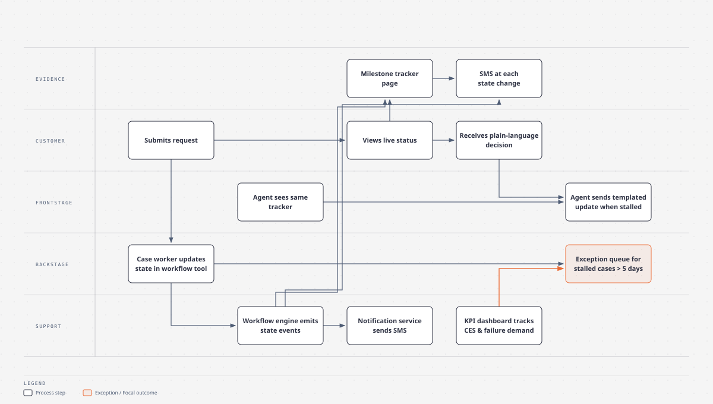
Emotion line (1 = very negative, 5 = very positive), from coded corpus:
| Stage | Emotion (1-5) | Dominant pain |
|---|---|---|
| Aware and trigger | 3 | Unclear what the letter demands |
| Submit | 2 | Form anxiety; no completeness confirmation |
| Wait | 1 | Zero status visibility; fear file is lost |
| Resolve | 2 | Decision written in regulatory codes |
| Close | 3 | Self-archiving as coping mechanism |
A2. Future-state service blueprint (selected concept: continuous progress visibility)
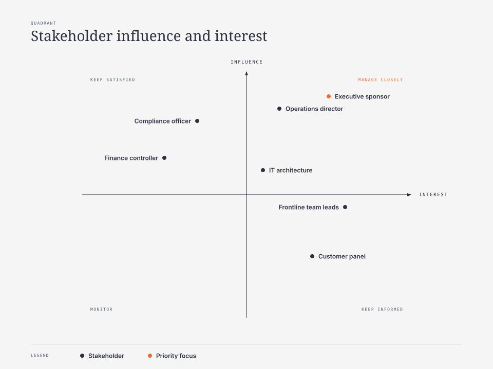
Lane table version:
| Lane | Step 1 Submit | Step 2 Track | Step 3 Resolve |
|---|---|---|---|
| Evidence | Tracker page created instantly | SMS per state change | Plain-language decision letter |
| Customer | Submits in one sitting | Checks status self-serve | Reads decision without calling |
| Frontstage | Sees identical tracker view | Sends templated update if stalled | Handles only genuine exceptions |
| Backstage | Sets initial state | Exception queue over 5 days | Closes with coded reason |
| Support | Workflow emits state events | Notification service | KPI dashboard, weekly review |
A3. Stakeholder map (composite engagement)
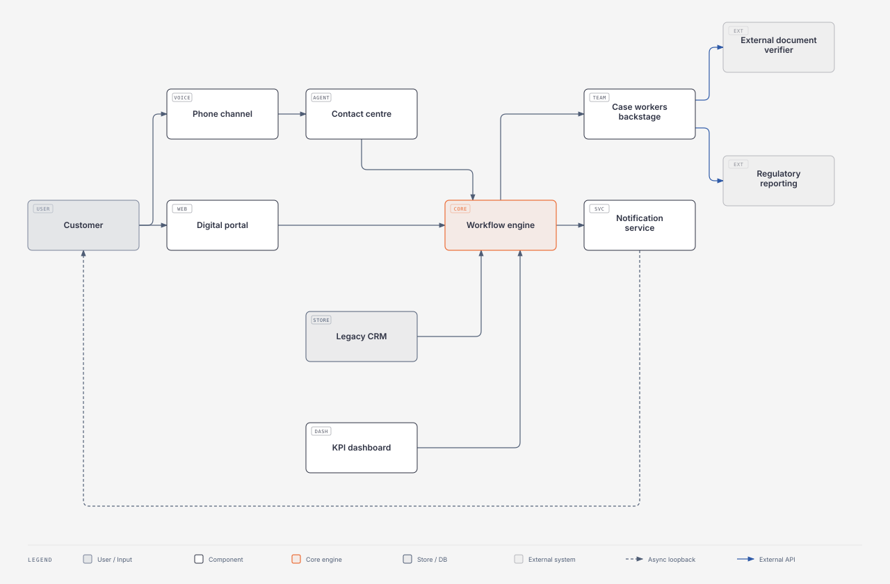
A4. Ecosystem / context map
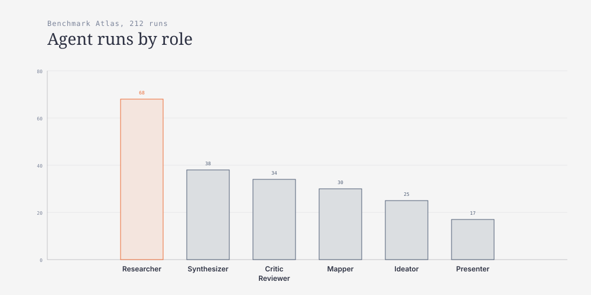
A5. Persona set (from coded corpus, illustrative)
| Persona | Profile | Goal | Key behavior from data | Design implication |
|---|---|---|---|---|
| Petra, 52, cautious claimant | Submits 1-2 requests per year, low digital confidence | Certainty the request landed | Photographs every letter; calls on day 3 (seen in 9 of 24 interviews) | Proactive status push, not pull |
| Joris, 34, impatient professional | Digital-first, mobile-only | Speed and self-service | Abandons forms over 10 minutes (survey: 61% of under-40s) | One-sitting submit, save-resume |
| Anja, 41, frontline agent | 6 years in contact centre | Answer status calls fast | Alt-tabs across 4 systems per call (shadowing log) | Single tracker view shared with customer |
A6. Templates
SOP-as-code template (the master encoding pattern):
sop_id: SD-DEF-002
method: "Collaborative affinity synthesis and insight formulation"
source: "03-service-design-from-insight-to-implementation/04-from-research-to-insight.md"
phase: define
inputs:
- fieldwork/coded/*.json # schema-validated coded transcripts
steps:
1_cluster: "Group coded utterances by semantic similarity; min cluster size 3"
2_name: "Name each cluster with an active sentence describing the phenomenon"
3_formulate: "Emit insight cards: observation + underlying tension + design implication"
4_evidence: "Attach >=2 verbatim quotes from independent participants per card"
output_schema: schemas/insight-card.json
acceptance_criteria:
- "Every evidence quote exists verbatim in fieldwork/coded/"
- "Every card implication follows from its observation (Critic verdict)"
- "No card duplicates an existing card theme"
review_gate:
reviewer: critic-agent
then_human: "Designer facilitates synthesis playback; client signs Gate 2"
failure_modes:
- "Theme averaging: clusters smoothed into bland categories -> require tension field non-empty"
- "Orphan evidence: quote not found in corpus -> hard reject"GitHub issue template (.github/ISSUE_TEMPLATE/sop-run.md):
---
name: SOP run
about: One invocation of a service design SOP by an agent
labels: sop-run
---
## SOP
sop_id: <!-- e.g. SD-DEF-002 -->
phase: <!-- discover | define | develop | deliver -->
## Inputs
<!-- linked artifacts or data paths -->
## Assigned agent
<!-- researcher | synthesizer | mapper | ideator | critic | presenter -->
## Acceptance criteria
<!-- copied from the SOP definition; do not edit here -->
## Gate
- [ ] Critic review passed
- [ ] Human designer sign-off
- [ ] Actions validation green (schema + mermaid + lint)A7. Mock dataset — agent run log (extract; full log has 212 rows)
run_id,date,phase,agent,tool,task,duration_min,human_review_min,gate_result,artifact
R-0017,2026-01-09,discover,researcher,opencode,transcribe-and-pseudonymize,41,5,PASS,fieldwork/coded/INT-007.json
R-0024,2026-01-12,discover,researcher,codex,context-scan-benchmarks,55,20,PASS,context/context-scan.md
R-0031,2026-01-14,discover,researcher,claude-code,survey-coding-214,28,10,PASS,fieldwork/coded/survey-batch.json
R-0058,2026-01-27,define,synthesizer,claude-code,affinity-clustering,36,120,PASS,insights/clusters-v1.json
R-0063,2026-01-28,define,synthesizer,claude-code,insight-card-drafting,44,60,REVISE,insights/draft/cards-v1.json
R-0064,2026-01-28,define,critic,claude-code,evidence-verification,18,0,FAIL,insights/review-v1.json
R-0065,2026-01-29,define,synthesizer,claude-code,card-revision,22,30,PASS,insights/cards-v2.json
R-0071,2026-01-30,define,mapper,claude-code,current-state-journey,33,45,PASS,maps/journey-current.md
R-0094,2026-02-06,develop,ideator,claude-code,hmw-concept-generation,52,90,PASS,concepts/catalog-v1.json
R-0101,2026-02-07,develop,critic,claude-code,nuf-rescore-pessimistic,25,15,REVISE,concepts/nuf-review.json
R-0112,2026-02-10,develop,researcher,opencode,wiz-of-oz-mock-data,47,10,PASS,prototypes/woo/mock-data.json
R-0136,2026-02-26,deliver,mapper,claude-code,future-blueprint,39,60,PASS,maps/blueprint-future.md
R-0141,2026-02-27,deliver,researcher,opencode,blueprint-to-backlog,58,25,PASS,backlog/tickets-74.json
R-0198,2026-03-20,deliver,presenter,claude-code,pilot-week4-memo,19,20,PASS,memos/pilot-w4.mdA8. Charts
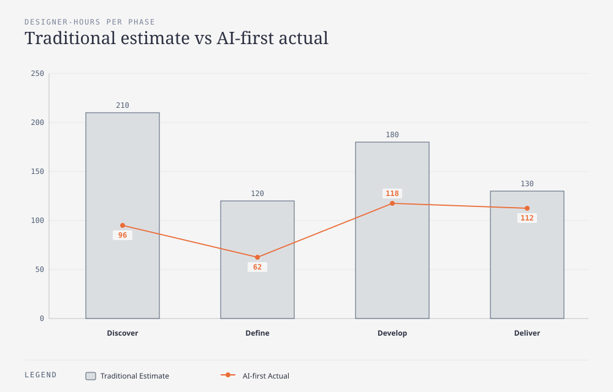
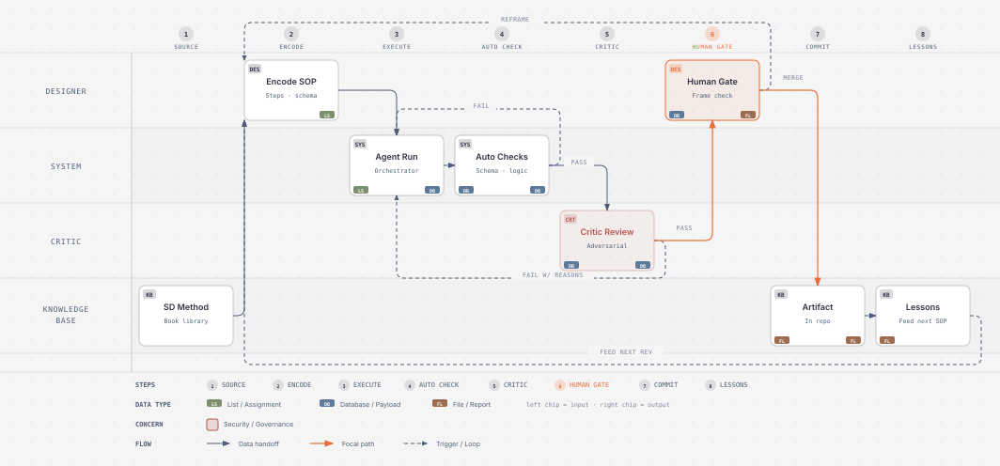
A9. Journey-to-value traceability table
| Opportunity (insight) | Design principle | Blueprint change | KPI moved (illustrative) |
|---|---|---|---|
| Claimants keep private photo archives out of fear the file is lost | Every state change must be visible without asking | New evidence lane: milestone tracker + SMS per state event | Status-chasing calls −31% (pilot) |
| Generic rejection letters generate decode-calls | Plain language at the moment of decision | Decision letter rewritten; frontstage templated updates | First-contact resolution 64% → 81% |
| Agents alt-tab across 4 systems per status call | Staff and customer share one tracker view | Frontstage lane: same tracker as customer | Average handling time 7.2 → 4.1 min |
| Forms abandoned over 10 minutes on mobile | One-sitting submit with save-resume | Submit step split into 3 mobile-sized chunks | Onboarding completion 59% → 74% |
A10. Service Standards Audit (Good Services 15 principles)
Audit of the Fernwood Council housing-repair claim service against Lou Downe's 15 principles of good services, run during the Deliver phase as a Gate 4 input (See: 05-good-services/02-the-fifteen-principles.md). Status: 13 PASS, 2 FAIL.
| # | Principle | Status | Evidence / gap | Action required |
|---|---|---|---|---|
| 1 | Be easy to find | PASS | Tracker link is printed in the repair acknowledgement letter and repeated in every SMS milestone. | None. |
| 2 | Clearly explain its purpose | PASS | Portal header rewritten in plain language during Develop; states what the tracker shows and what it does not. | None. |
| 3 | Set a user's expectations | PASS | Tracker lists the repair stages and the target SLA per stage up front, so day-3 "did it land" calls have an answer before they are made. | None. |
| 4 | Enable completion in one go | PASS | Claim logged in a single phone call; web form is one-sitting submit with save-resume on mobile. | Monitor form abandonment rate. |
| 5 | Work in a way that is familiar | PASS | Milestone tracker uses the standard e-commerce delivery-tracking pattern tenants already know. | None. |
| 6 | Require no prior knowledge | FAIL | The top-3 decision letters were rewritten, but long-tail exception letters still cite tenancy-policy clause numbers. | Rewrite remaining exception letter templates in plain language. |
| 7 | Be agnostic of organisational structures | PASS | One tracker view hides the backstage split across the 4 systems agents previously alt-tabbed between. | None. |
| 8 | Require the minimum possible steps | PASS | Evidence upload trimmed to a single photo; exceptions resolved backstage instead of bouncing back to the tenant. | None. |
| 9 | Be consistent throughout | PASS | Frontline agents and tenants see the same tracker view; phone, SMS, and portal tell the same story. | None. |
| 10 | Have no dead ends | PASS | Every SMS milestone carries the direct repairs line if a job stalls past its SLA. | None. |
| 11 | Be usable by everyone, equally | PASS | Tracker is WCAG 2.1 AA; the phone channel is retained for low-digital-confidence tenants (persona Petra). | Re-test with assistive tech at rollout. |
| 12 | Encourage the right behaviours | PASS | Removing the Average Handling Time target let agents resolve the root issue instead of closing the call fast. | Continued HR alignment on incentives. |
| 13 | Respond to change quickly | PASS | Weekly failure-demand dashboard; the Wizard of Oz finding that 78% of tenants need only 3 milestones resized scope mid-pilot. | None. |
| 14 | Clearly explain why a decision was made | FAIL | Complex rejections still link to opaque policy documents rather than explaining the reason. | Plain-language explanation snippets per rejection code; agent training. |
| 15 | Make it easy to get human assistance | PASS | Repairs contact number is persistent on the tracker page and in every SMS. | None. |
The two FAILs became Deliver-phase backlog tickets linked to their blueprint cells, so the audit feeds the same traceability chain as every other artifact rather than sitting in a slide.
Use cases
6.1 Calder Community Bank — digital onboarding abandonment
Scenario. Fictional regional bank, 410,000 customers. Digital onboarding abandonment sat at 41%, concentrated at the identity-verification step. Leadership's brief was "shorten the form."
OS application. Discover: 18 interviews plus branch shadowing in 2 weeks; the OpenCode corpus pipeline coded all transcripts in 2 days (traditional estimate: 3 weeks). Codex produced a sourced benchmark scan of EU onboarding patterns. Define: Synthesizer produced 14 insight cards; the decisive one — abandonment peaked not at form length but when customers could not tell whether the verification photo had succeeded — survived Critic evidence verification with 11 independent quotes. Develop: 64 concepts, NUF-scored twice; the winner was a live-capture guidance overlay with instant success confirmation. Deliver: 6-week pilot in the mobile channel.
Sample dispatch (Claude Code):
"Spawn the synthesizer subagent with SOP SD-DEF-002 against fieldwork/coded/.
Corpus: 18 coded transcripts + 214 survey rows. Acceptance: every card carries
>=2 verbatim quotes from distinct participants; tension field non-empty.
Critic reviews before I see the cards."Outcome (illustrative): onboarding completion 59% → 74% in the pilot cohort; verification-related support contacts −22%; the "shorten the form" brief was reframed — the form stayed the same length.
6.2 Fernwood Council — housing repair claim status demand
Scenario. Fictional municipality, 180,000 residents. The contact centre fielded ~3,100 status-chasing calls per month about housing repairs — pure failure demand (See: 01-this-is-service-design-doing/07-implementation-and-piloting.md).
OS application. Discover combined tenant interviews with backstage shadowing of the repairs scheduling team, where the Mapper documented a 4-system alt-tab pattern per call. Define produced the now-familiar insight: tenants called because no other channel proved their repair existed. Develop ran a Wizard of Oz pilot — tenants received SMS milestones sent manually by a temp worker behind the scenes for 3 weeks to prove demand before any automation was built (See: 01-this-is-service-design-doing/06-prototyping-methods.md). Deliver: OpenCode translated the future blueprint into 58 backlog tickets; a GitHub Action enforced that each ticket linked to a blueprint cell.
Outcome (illustrative): 8-week pilot in one district cut status-chasing calls 3,100 → 2,140 per month (−31%); the Wizard of Oz phase measured that 78% of tenants needed only 3 milestone messages, sizing the automation to a simple rule engine rather than the proposed chatbot build — an estimated €140,000 of avoided scope.
6.3 Forge Industrial — B2B field-service quoting
Scenario. Fictional industrial services firm, 620 field technicians. Average time-to-quote after a site visit: 9 days, because technicians hand-wrote visit notes that office staff re-keyed and priced.
OS application. This engagement is where the governance model earned its keep. Codex's deep-research scan of field-service SLA benchmarks arrived with 3 invented statistics — plausible, confidently phrased, and false. The Critic's sourcing contract (every numeric claim needs a URL plus verbatim quote) flagged all three before the client ever saw them; they are logged as run R-0024-class events in the run log's REVISE/FAIL lineage. The redesigned flow let technicians dictate structured visit notes on mobile; the Mapper's blueprint showed pricing was the real bottleneck, so the pilot scoped to note-structuring only.
Outcome (illustrative): time-to-quote 9 → 2 days for pilot product lines; technician eNPS +14; zero unsourced claims reached the client across the engagement.
SOPs for AI — how service design SOPs are best used by agents
7.1 The encoding pattern
Every SOP follows one pattern, shown in A6: method → step list → output schema → acceptance criteria → review gate. The discipline is in the last three elements. A step list without a schema produces prose; a schema without acceptance criteria produces well-formed nonsense; acceptance criteria without a gate produce unreviewed risk. Kumar's method-card architecture — What, When, How, Output — is the intellectual ancestor (See: 17-101-design-methods/01-innovation-as-a-process.md); we added the machine-checkable tail.
7.2 The SOP-as-code lifecycle
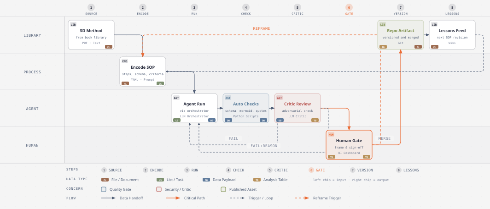
7.3 The meta-SOP
Research → synthesize → map → ideate → prototype → measure → deliver, with gates G1–G4 as in section 3.5. Each gate has the same checklist shape:
| Gate | Question | Evidence required | Decider |
|---|---|---|---|
| G1 evidence audit | Is the corpus real, consented, triangulated? | Coded corpus stats; consent log; triangulation memo | Designer |
| G2 insight sign-off | Does each insight change what we design? | Insight cards with verified quotes | Client + designer |
| G3 concept selection | Are selections scored, not lobbied? | Double NUF scoring; disagreement log | Client + designer |
| G4 pilot review | Scale, iterate, or kill — on data? | Pilot KPI dashboard vs baseline | Client |
7.4 Prompt templates
Orchestrator dispatch (the pattern every run uses):
"You are the <role> agent for engagement <code>. Execute SOP <sop_id> exactly
as defined in sops/<sop_id>.yaml. Inputs: <paths>. Write output to <path>
conforming to <schema>. Do not add content beyond the inputs and your method.
When uncertain, mark [unverified] rather than filling gaps. Report: artifacts
written, criteria self-check results, uncertainties."7.5 Guardrails
- Hallucination control. Numeric claims require source + verbatim quote; evidence quotes must exist verbatim in the corpus (CI-greppable); the Critic runs on every consequential artifact, and anything it cannot verify is marked
[unverified], never smoothed over. - Privacy. Pseudonymization happens in the OpenCode pipeline before any transcript touches a general-purpose model context; raw identifiers live in a privacy-map file excluded from agent mounts; client data residency requirements are encoded per engagement.
- Client gates. G2 and G4 are client-signed. Agents prepare; humans present; clients decide.
- Human sign-off points. Framing, insight naming, concept kill decisions, pilot go/no-go, and every external communication.
7.6 Failure modes observed
| Failure mode | Example | Mitigation |
|---|---|---|
| Invented benchmarks | 3 false SLA statistics (Forge) | Sourcing contract + Critic verification |
| Theme averaging | Clusters smoothed into "Communication issues" | Tension field mandatory; human names clusters |
| Persona drift | Generated personas gaining invented detail over iterations | Personas compiled only from coded corpus; Critic diff-checks |
| Over-eager scope | Ideator proposing buildable-sounding features with no insight link | Traceability audit: orphan features deleted (See: 17-101-design-methods/01-innovation-as-a-process.md) |
| Broken diagrams | Mermaid syntax failing on special characters | Actions run a mermaid parse on every PR; simple constructs only |
Value creation & measurement
Before/after for Benchmark Atlas — traditional estimate vs AI-first actual (all figures illustrative):
| Metric | Traditional (est.) | AI-first (actual) | Delta |
|---|---|---|---|
| Calendar duration | 16 weeks | 14 weeks | −12.5% |
| Designer-hours | 640 | 388 | −39% |
| Engagement cost (€130/h + tooling) | €83,200 | €52,540 (incl. €2,100 tooling) | −37% |
| Interviews fully coded | 8-10 (typical cut) | 24 | +140% |
| Fieldwork to first journey map | 15 working days | 4 working days | −73% |
| Concepts generated and scored | ~25 | 118 | +372% |
| Iteration loops completed | 1 | 3 | +200% |
| Insight-to-blueprint traceability | informal | 100% of elements | — |
| Client-gate rework rounds (avg) | 3.0 | 1.2 | −60% |
| Agent runs / FAIL-then-PASS rate | — | 212 runs; 9% first-pass fail, 100% caught pre-client | — |
The causal logic follows the Service Profit Chain direction (See: 20-the-service-profit-chain/01-the-service-profit-chain.md — referenced here for the measurement logic): operational metrics move first (status calls −31%, handling time 7.2 → 4.1 min), experience metrics follow (CES, completion 59% → 74%), and business metrics land last (avoided chatbot scope ~€140,000 at Fernwood; engagement cost −37% makes the SD loop affordable at mid-market budgets, which is itself the largest value: more organizations can afford to design services properly). The KPI tree — leading CES and task-completion feeding lagging retention, with failure-demand volume as operational health — is instantiated per engagement from the Deliver SOP (See: 01-this-is-service-design-doing/07-implementation-and-piloting.md).
AI tool playbook
Claude Code — orchestrator and artifact author. Role: dispatches all role agents, integrates their outputs, authors maps, memos, and this article's kin. Concrete usage: subagent dispatch prompts as in 7.4; the orchestrator holds the SOP registry and never lets agents free-style outside one. Excelled at: long structured authoring runs, enforcing schema discipline across a 14-week engagement, keeping artifact voice consistent. Failed at: occasionally over-trusting a subagent's self-report — mitigated by CI checks, not by reading every line. Human took over: all framing, naming, and gate facilitation.
OpenCode — agent-mode pipelines. Role: everything that looks like data engineering. Transcription/pseudonymization/coding pipeline (4.1), mock data generation bound to the persona set (4.3), blueprint-to-backlog translation emitting 74 linked tickets (4.4). Excelled at: deterministic, re-runnable transformations where a loud schema failure beats a silent wrong answer. Failed at: anything requiring taste; its first clustering pass was unusably bland and was replaced by the Synthesizer. Human took over: pipeline acceptance criteria and privacy-map review.
Codex — deep research and adversarial second opinion. Role: sourced context scans (Discover) and red-team review of consequential artifacts via codex exec --skip-git-repo-check with a sourcing contract (4.1, 6.3). Excelled at: breadth — a benchmark scan across 3 years of EU onboarding data in under an hour. Failed at: invented statistics, exactly the failure its contract is designed to catch; 3 caught at Forge, 0 reached a client. Human took over: reconciling Codex disagreements with the designer's read by checking primary sources, never by averaging.
GitHub — delivery backbone. Role: issues as SOP-run work items, PRs as review gates, Actions as artifact CI, Projects as the phase board. The Actions workflow on every PR runs three checks: markdown lint, a mermaid parse of every fenced diagram, and schema validation of every JSON artifact against schemas/:
# .github/workflows/artifact-ci.yml (excerpt)
on: [pull_request]
jobs:
validate:
steps:
- run: markdownlint '**/*.md'
- run: mmdc --parse $(git diff --name-only origin/main | grep '\.md$')
- run: ajv validate -s schemas/$SCHEMA -d "$f" --spec=draft2020Excelled at: making gates mechanical — a green PR is a reviewed artifact, and git log is the traceability audit. Failed at: nothing structural; the honest limitation is that CI validates form, not truth, which is why the Critic and human gates exist above it.
Lessons learned & pitfalls
- Agents fail confidently; gates must fail loudly. Every serious incident (invented benchmarks, orphaned quotes) was silent until a mechanical check caught it. Schema validation and verbatim-quote grep are worth more than any prompt refinement.
- Synthesis quality is set by the corpus, not the model. The one time synthesis disappointed, the cause was 8 thin interviews, not the Synthesizer. Fund fieldwork; agents make it cheap to exploit, not to skip.
- The Critic pays for itself asymmetrically. 16% of runs (34 of 212) were review runs; they caught 100% of pre-client defects. Skipping review to save time is the most expensive optimization available.
- Clients trust gates, not agents. Adoption of the OS happened when clients saw the G2 checklist and the FAIL log — visible quality control, not AI claims.
- Convergence is where humans earn the fee. Divergence scales with compute; choosing what to kill, against politics, with incomplete evidence, does not (See: 01-this-is-service-design-doing/05-ideation-methods.md).
- Templates drift. SOPs improved every engagement; versioning them in the repo (and diffing behavior after edits) prevented silent regressions that a prompt-in-a-doc would have hidden.
- Keep diagrams boring. Every mermaid breakage came from exotic syntax; simple constructs survived every renderer (See section 7.5 failure table).
- The designer's job shrinks and deepens. 252 hours saved per engagement did not become leisure; they became two extra iteration loops and more time in the field — the loops the fake-iteration trap usually eats (See: 01-this-is-service-design-doing/03-the-service-design-process.md).
References
Book chapters used (knowledge library paths):
- See: 01-this-is-service-design-doing/03-the-service-design-process.md — four activities, iteration loops, zoom levels, fake-iteration trap
- See: 01-this-is-service-design-doing/04-research-methods.md — triangulation, contextual inquiry, research wall
- See: 01-this-is-service-design-doing/05-ideation-methods.md — HMW, divergence/convergence, NUF test
- See: 01-this-is-service-design-doing/06-prototyping-methods.md — progressive fidelity, Wizard of Oz, hypothesis-first prototyping
- See: 01-this-is-service-design-doing/07-implementation-and-piloting.md — pilots vs rollout, blueprint-as-contract, failure demand, KPI triangulation
- See: 01-this-is-service-design-doing/08-facilitating-workshops.md — workshop-as-service, 24-hour decision memo
- See: 01-this-is-service-design-doing/09-service-design-in-organizations.md — capability vs campaign, maturity model
- See: 03-service-design-from-insight-to-implementation/04-from-research-to-insight.md — data → information → insight, acid test
- See: 17-101-design-methods/01-innovation-as-a-process.md — seven modes, method-card architecture, traceability audit
- See: 11-design-unbound/02-design-as-a-way-of-acting.md — abductive framing, ends-in-view, studio crit
- See: 06-the-service-innovation-handbook/08-organizing-for-service-innovation.md — distributed capability, communities of practice
- See: 05-good-services/02-the-fifteen-principles.md — 15 principles of good services, service standards audit
- See: 20-the-service-profit-chain/01-the-service-profit-chain.md — Service Profit Chain, leading/lagging operational metrics
Related series articles: See: ../06/README.md (research operations at scale), ../29/README.md (SOPs as code playbook), ../30/README.md (the future of AI-native practice).
All engagement figures are illustrative fictional composites; no external statistics are asserted. Where benchmark-like numbers appear (e.g., Codex context scans), they describe fictional tool outputs, not real-world data.
Appendix: artifact index
| Artifact | Section | Format | Purpose |
|---|---|---|---|
| Process frame: 4D ↔ TISDD ↔ Kumar 7 modes | 3.1 | SVG diagram (diagram-design) | Phase logic and gate structure |
| SD OS architecture diagram | 3.2 | SVG diagram (diagram-design) | Four-layer operating system overview |
| Agent-team topology | 3.3 | SVG diagram (diagram-design) | Six roles, ownership, veto path |
| Agent interaction pattern | 3.4 | SVG diagram (diagram-design) | Numbered handoff protocol via files and gates |
| Benchmark gantt | 3.5 | SVG diagram (diagram-design) | 14-week reference plan with gates |
| Phase-method-tool map | 3.6 | Table | Method, tool, artifact, client role per phase |
| Capability matrix | 3.7 | Table | SD method × AI tool × value, with failure modes |
| A1 current-state journey | 5 | SVG diagram + emotion table (diagram-design) | Current-state experience and pain |
| A2 future-state blueprint | 5 | SVG blueprint + lane table (diagram-design) | Operational contract for selected concept |
| A3 stakeholder map | 5 | SVG quadrant (diagram-design) | Influence × interest management |
| A4 ecosystem map | 5 | SVG ecosystem (diagram-design) | Actors, channels, systems |
| A5 persona set | 5 | Table | 3 corpus-derived personas |
| A6 SOP-as-code template | 5 | Fenced YAML | Master encoding pattern |
| A6 GitHub issue template | 5 | Fenced markdown | SOP-run work item shape |
| A7 agent run log extract | 5 | Fenced CSV | 14 of 212 runs, gates visible |
| A8 agent-task distribution | 5 | SVG bar chart (diagram-design) | Run mix by role |
| A8 effort per phase | 5 | SVG bar chart (diagram-design) | Traditional vs AI-first hours |
| A9 traceability table | 5 | Table | Insight → principle → blueprint → KPI |
| A10 service standards audit | 5 | Table | Good Services 15-principles PASS/FAIL audit |
| Gate checklist | 7.3 | Table | G1–G4 questions, evidence, decider |
| SOP-as-code lifecycle | 7.2 | SVG diagram (diagram-design) | Encode → run → check → review → sign-off |
| Prompt templates | 7.4 | Fenced text | Replicable dispatch pattern |
| Before/after metrics | 8 | Table | Value creation summary |
| Actions CI excerpt | 9 | Fenced YAML | Mechanical gate enforcement |